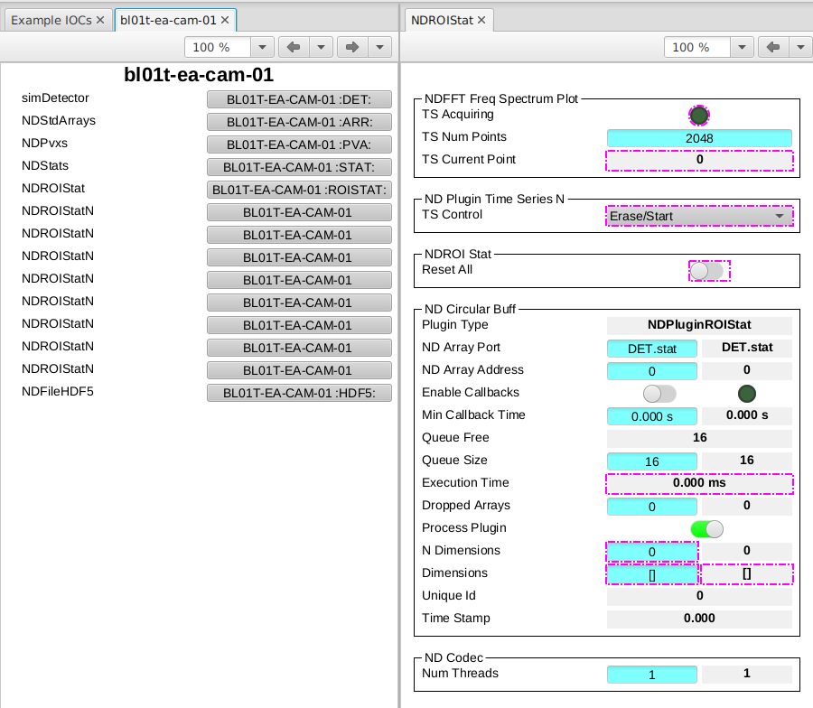

Add the Standard Detector Plugins#
In Create an IOC Instance you built bl01t-ea-cam-01, a simulated area detector with
just a camera and a Standard Arrays plugin. Real detectors want more: live
statistics, regions of interest, a file writer. This tutorial vendors
a set of AreaDetector plugins into that same instance, using ibek pattern:
pinned, integrity-hashed, and loaded at runtime with no image rebuild.
Substitute your own names throughout.
Note
detectorPlugins provides a light set of four plugins, and is the recommended
set for Diamond II. The prior gdaPlugins pattern also published in the same repo
matches what we used to ship with builder IOCs.
For non DLS users this just serves as a useful example and you are free to create your own pattern repositories.
By the end you will have:
the
detectorPluginspattern vendored intobl01t-ea-cam-01at a pinned version, recorded inruntime-lock.yaml;four extra plugins — PVA, statistics, ROI-statistics and an HDF5 file writer — each with an auto-generated Phoebus screen.
Note
This continues directly from Create an IOC Instance; you need the
bl01t-ea-cam-01 instance from that tutorial. Run the ibek pattern commands
on your workstation with ibek ≥ 4.6.1 installed (or prefix them with
uvx --from ibek).
Vendor the plugin pattern#
detectorPlugins lives in the public
ibek-runtime-support
library — one of two pattern libraries ibek knows about out of the box. From
the services-repo root, vendor it into the instance:
cd t01-services
ibek pattern add ibek-runtime-support:detectorPlugins@v0.1.0 services/bl01t-ea-cam-01
The qualified name is <library>:<pattern>@<tag>. That one command:
Step |
Result |
|---|---|
Copies the pattern’s file-set into |
here just |
Pins + hashes it in |
records the |
Regenerates the instance’s |
merges the vendored entity models into your image’s schema, so the editor validates the new entity |
Note
runtime-lock.yaml is written at the instance root, not inside config/.
Only config/ is mounted into the container, so it stays the small
runtime-input bundle; the lock is developer-side metadata.
The local ioc.schema.json#
The last step writes a per-instance ioc.schema.json so your editor knows about
the entities you just vendored. ibek reads the image you pinned in
compose.yml, fetches that image’s published schema, and merges the
vendored pattern’s entity models into it. The result is written next to
compose.yml at the instance root (it is developer-side metadata, so it is not
mounted into the container), and the schema line at the top of config/ioc.yaml
is rewritten from the remote URL you set in Create an IOC Instance to point at the
new sibling file:
# yaml-language-server: $schema=../ioc.schema.json
That schema is now the union of the image’s compiled-in entities and the
vendored pattern’s — so when you add the plugin entity in the next step, the
editor offers completion and validation for detectorPlugins.detectorPlugins
just as it did for the camera. Re-run it standalone any time the vendored set
changes with ibek pattern schema services/bl01t-ea-cam-01.
Note
The schema is regenerated only if the image has published a schema release
(as ioc-adsimdetector does). A generic image without one is reported and
skipped — vendoring still works, you just edit ioc.yaml without local
validation for the new entities.
Add the plugin entity#
The vendored support file supplies a detectorPlugins.detectorPlugins
entity_model. Append a single entity for it to
services/bl01t-ea-cam-01/config/ioc.yaml:
- type: detectorPlugins.detectorPlugins
P: BL01T-EA-CAM-01
CAM: DET.DET # the simDetector PORT from create_ioc
PORTPREFIX: DET
CAM is the camera’s Asyn port (DET.DET, the simDetector from
Create an IOC Instance); PORTPREFIX namespaces the new plugin ports (DET.stat,
DET.hdf5, …) so they cannot clash with the camera or the existing
NDStdArrays port DET.ARR.
This one entity expands — via the support def’s sub_entities — into the four
plugins of the lighter Ophyd set, all already compiled into the
AreaDetector image:
Plugin |
PV prefix |
What it does |
|---|---|---|
|
|
re-publishes the camera image over pvAccess as one structured PV |
|
|
live frame statistics — min/max/mean/sigma, centroid, histogram |
|
|
lightweight per-region statistics for up to 8 ROIs |
|
|
writes frames to HDF5 files on disk |
Note
The library also ships a heavier gdaPlugins model (ROIs, process, overlay,
TIFF, ffmpeg stream, …). Stick with the light detectorPlugins set here —
gdaPlugins pulls in ffmpegServer, which the ioc-adsimdetector image does
not build.
Run it and view the new screens#
Restart the instance so its start.sh re-runs ibek runtime generate2, which
discovers the vendored config/detectorPlugins.ibek.support.yaml and expands
the new entity:
source ./environment.sh
docker compose restart bl01t-ea-cam-01
PVI generates one engineering screen per new plugin under
opi/auto-generated/bl01t-ea-cam-01/, and adds them to that IOC’s index.bob.
Open auto-generated/bl01t-ea-cam-01/index.bob in Phoebus (as in
Run It and View the Screens) and new panels appear alongside the camera: a
statistics panel plotting live mean/sigma and a histogram, a
ROI-statistics panel, an HDF5 file-writer panel (file path, name,
capture), and a PVA panel exposing the image as a single pvAccess PV. Hit
Acquire on the camera and the stats and ROI plots update per frame.

The auto-generated plugin panels for bl01t-ea-cam-01 in Phoebus, alongside the
camera — statistics, ROI-statistics, HDF5 file writer and PVA.#
Check what your IOC is running#
Because every vendored file is hashed in runtime-lock.yaml, “what support is
this IOC running?” is answerable from git with certainty. Re-verify the
vendored files against their pins at any time — ideal in CI or a pre-commit
hook:
ibek pattern check services/bl01t-ea-cam-01
It re-hashes each file and exits non-zero on any drift. To move to a newer
release later,
ibek pattern update services/bl01t-ea-cam-01 --name detectorPlugins -v <tag>
re-pins and refreshes the hashes.
Commit#
This instance is reused by later tutorials, so commit the vendored
config/detectorPlugins.ibek.support.yaml and runtime-lock.yaml:
git add .
git commit -m "Vendor detectorPlugins into bl01t-ea-cam-01"
Next steps#
Add a Stream Device with ibek pattern — vendor a StreamDevice device pattern and run its simulator: the other half of consuming a published pattern.
Author Your Own Runtime Pattern — author your own runtime pattern (a cut-down plugin set) by forking
ibek-runtime-support.